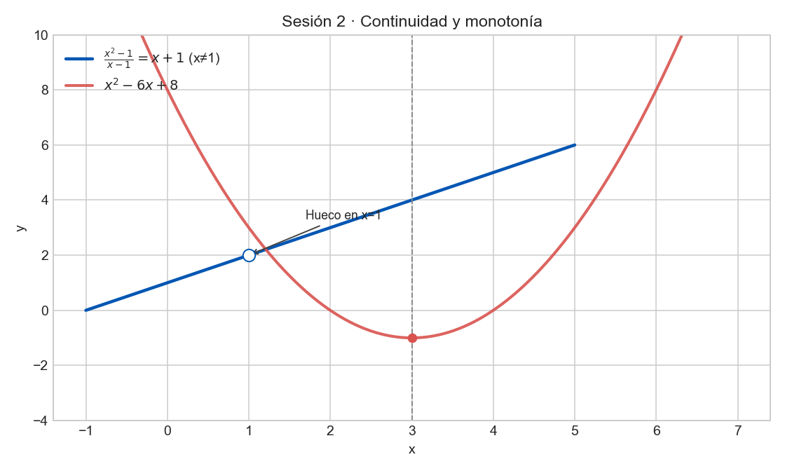

Ejercicio 1 (Modelado)
Dada una gráfica de evolución del precio de una acción en una jornada, identifica crecimiento, decrecimiento, máximos relativos y posibles discontinuidades.
Crecimiento donde la pendiente es positiva, decrecimiento donde es negativa. Máximos relativos en los picos. Las discontinuidades se detectan por saltos o huecos.
Ejercicio 2 (Práctica)
Analiza la continuidad de \(f(x)=\frac{x^2-1}{x-1}\). ¿Qué ocurre en \(x=1\)?
\(f(x)=\frac{(x-1)(x+1)}{x-1}=x+1\), salvo en \(x=1\). Hay discontinuidad evitable en \(x=1\) porque \(\lim_{x\to1}f(x)=2\).
Ejercicio 3 (Práctica)
Estudia crecimiento/decrecimiento de \(f(x)=x^2-6x+8\) usando su vértice.
Vértice en \(x=3\). Como \(a>0\), decrece en \(( -\infty,3)\) y crece en \((3,+\infty)\).
Ejercicio 4 (Práctica)
Si una población crece en \([0,5]\) y decrece en \([5,10]\), ¿qué ocurre en \(x=5\)?
En \(x=5\) se alcanza un máximo relativo porque la función cambia de creciente a decreciente.
f(x)=(x^2-1)/(x-1)q(x)=x^2-6x+8Extremum(q)